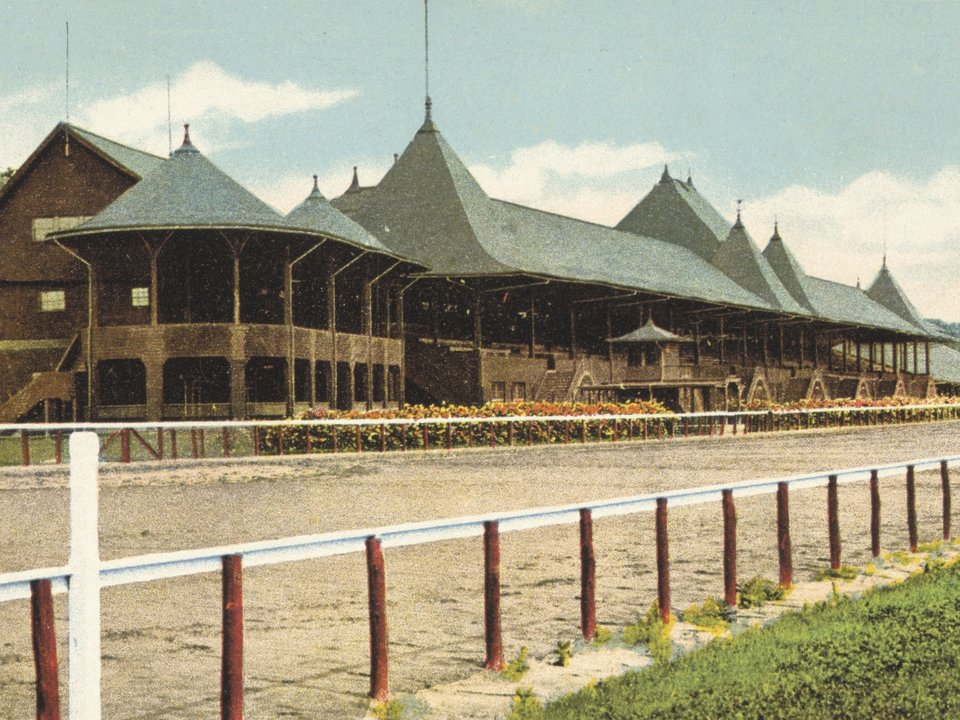

Broadway · Grand hotel
The Adelphi Hotel
A restored 1877 grand hotel on Broadway, with a pool, a lively bar and Victorian flair.
Official details for The Adelphi HotelHorse racing, mineral baths and a lively main street.
Saratoga Springs has drawn visitors to its mineral springs for two centuries, and to its racetrack since 1863. Spend a summer afternoon at one of the oldest tracks in the country, soak at the Roosevelt Baths, walk Broadway’s Victorian blocks and catch an evening concert under the trees.

Time illustration: direct distance at 150 KTAS plus 15 minutes for departure and arrival, matching the discovery page. Use ForeFlight for your actual flight plan.
5B2, Saratoga County Airport, sits just west of the city, about 10 minutes from Broadway.
405 Greenfield Avenue, Ballston Spa, NY 12020
Directories list hours from about 7:30 a.m. to dusk. Ask about rental cars or a taxi, parking and fees, and expect very busy weekends during the summer racing season. No live fuel price is shown.
At about 600 nm from Myrtle Beach, plan a fuel stop. Albany’s Class C airspace lies to the south. Review the sectional and current NOTAMs.
Rates and availability need travel dates, and racing season is much pricier.
A restored 1877 grand hotel on Broadway, with a pool, a lively bar and Victorian flair.
Official details for The Adelphi HotelA small, elegant hotel in an 1870 brick house, with a wide porch on Broadway.
Official details for Saratoga ArmsA 1935 Georgian Revival hotel inside Saratoga Spa State Park, next to the Roosevelt Baths.
Official details for The Gideon PutnamReserve dinners, especially in July and August.
An elegant downtown restaurant with a garden patio, known for steaks, raw bar and wine.
Official details for 15 ChurchSeasonal Italian cooking in an intimate room. Book well ahead.
Official details for Osteria DannyA Saratoga institution for Southern fried chicken and biscuits.
Official details for Hattie’sChoose one big outing a day and leave time for Broadway.
One of the oldest and most beautiful racetracks in the country, open for its summer meet from July to Labor Day. Arrive early for a picnic table.
Race scheduleMineral springs, trails and grand 1930s buildings. Taste the springs along the Geyser Creek trail.
Park informationAcross from the track, with the story of American thoroughbred racing.
Museum informationAn open-air amphitheater in the state park, summer home of the Philadelphia Orchestra and New York City Ballet.
SPAC scheduleAbout 30 minutes away, the battlefield where American forces won a turning point of the Revolution in 1777.
Soak in Saratoga’s naturally carbonated mineral water in private tubs, a tradition since the 1930s.
Booking: Ask about couples treatments, access for non-guests, current pricing and cancellation policy. No prices are shown here, and no appointment has been booked.
This prototype links to the local visitor site. It does not yet match events to your travel dates.
The summer meet, including the Travers Stakes in late August. Lodging prices soar; book very early.
Orchestra, ballet, jazz and rock concerts in the park.
Fall color, easier dinner reservations and lower rates.
Check the local calendar when choosing a weekend, and confirm dates and tickets with the organizer.
A sample Friday–Sunday weekend: the track or the baths, Broadway and two good dinners. No bookings or availability confirmed.
Land at 5B2 mid-morning and ride downtown.
Lunch at Hattie’s and a walk on Broadway.
A soak at the Roosevelt Baths, then back to the FBO.
Land at 5B2, subject to weather, your fuel stop and your actual flight plan.
Check in and walk Broadway and Congress Park.
Dinner at 15 Church.
Breakfast at the track in season, or the state park.
An afternoon at the races, or a soak at the Roosevelt Baths.
Dinner at Osteria Danny, or a SPAC concert.
The Racing Museum, or fried chicken at Hattie’s.
Allow time at the FBO.
Let weather and your flight plan set the departure.
Saratoga National Historical Park.
The Racing Museum, or a day at the track in season.
A SPAC concert in summer.
These details make the difference between an appealing list and a usable getaway.
Lodging first, especially in racing season, then dinners and spa time.
July and August are busiest. Spring and fall are calmer and cheaper.
Plan a fuel stop for most piston aircraft.
Rates and restaurant hours are date-dependent. No availability or live price is implied here.
Picks and links reviewed by WingAway Weekends. Hours, prices, menus and availability change often, so confirm directly with each place before booking. Spotted something out of date, or have a favorite we missed? Email us at hello@wingawayweekends.com.
WingAway Weekends helps you discover the destination. Use ForeFlight and current official aviation information for route, performance, weather, NOTAMs and preflight decisions. Flight planning and PIC responsibility stay with the pilot.
One fly-in weekend, a Fly to Lunch pick and the newest guides, about once a month.
Free. Unsubscribe anytime.